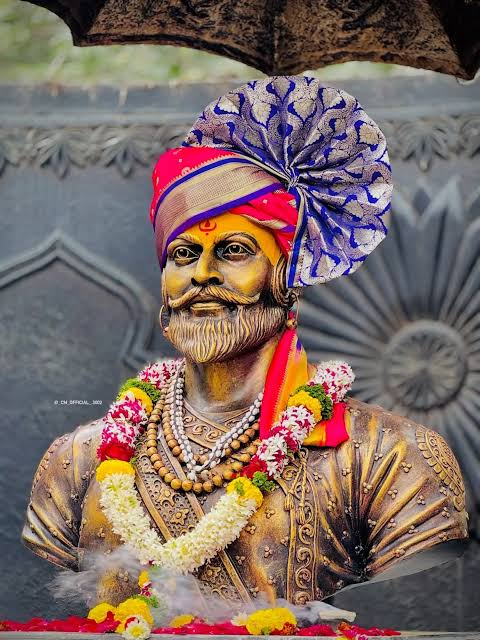

हिंदवी स्वराज्याचे संस्थापक

🚩 स्वराज्याचे संस्थापक 🚩
शौर्य • स्वराज्य • न्याय • स्वाभिमान
इतिहास जाणून घ्या →छत्रपती शिवाजी महाराज हे स्वराज्य स्थापनेचे महान प्रेरणास्थान होते. त्यांनी किल्ले, प्रशासन, आरमार आणि शिस्तबद्ध राज्यव्यवस्थेला महत्त्व दिले. त्यांच्या कार्यातून धैर्य, स्वाभिमान आणि न्यायाची प्रेरणा मिळते.
स्वराज्याची राजधानी आणि शिवाजी महाराजांच्या राज्याभिषेकाचे ठिकाण.
सह्याद्रीतील ऐतिहासिक आणि महत्त्वाचा किल्ला.
समुद्रातील भक्कम किल्ला आणि मराठा आरमाराशी संबंधित महत्त्वाचे ठिकाण.
संकटांचा धैर्याने सामना करण्याची प्रेरणा.
दूरदृष्टी आणि प्रभावी नेतृत्वाची प्रेरणा.
न्याय्य आणि शिस्तबद्ध प्रशासनावर भर.